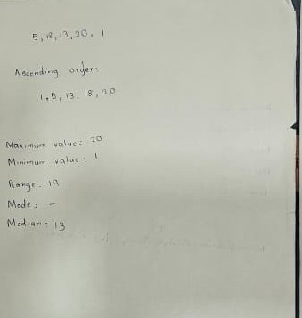

Finding the middle of a data set
One group’s five-number example makes the sorting and the median easy to check.
Learning goal
Use an ordered list to find the median, and use the two endpoints to calculate the range.
What we did
I demonstrated how to sort data on the board. Groups then wrote the ordered values on their worksheets and recorded the maximum, minimum, range, mode and median.
Why I chose this sample
I selected the five-value sheet because a reader can follow the entire calculation. The original list is 5, 18, 13, 20, 1. The group wrote 1, 5, 13, 18, 20 underneath and recorded a median of 13 and a range of 19.
How I read the work
The ordered row should contain each original value exactly once. Its third value is 13. Subtracting the smallest value from the largest gives 20 − 1 = 19. Every value occurs once, so there is no mode.
What I would change
Here, 13 also happens to sit in the middle of the unsorted list. The correct answer alone cannot show why sorting matters. Next time I would start with 20, 13, 1, 18, 5 and ask learners to compare their answers before and after sorting.
Classroom evidence
